STAGE LINES & LIVERIES.
1850-PRESENT
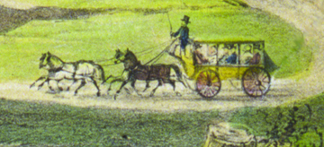
© Bancroft Library.
(c1855)

1850 March 27 - Gold was found in Columbia by the Hildreth Party; men mostly from the state of Maine. Within a few months the stages were coming in from all over bringing new and old miners to the "New Diggins" in hopes of finding color. "Stages serving Columbia in the early years fell into three groups; those running from Stockton, Sacramento, or local lines between Columbia and Sonora. While Sacramento, lines had no stables at Columbia the Stockton and local lines did. The first stage company stable lot was at the south east corner of Broadway and Fulton Streets. When the streets and lots of Columbia were laid out in September, 1851, what became Lot 4, Block 17, in 1871, consisted of five lots." (Barbara Eastman - May 1964)
"Starting from the south corner on Broadway, these lots were taken up by Milo Courtright, Henry S. Drew at the corner, then on Fulton two lots of Ben. M. Brainard and a small lot by Daniel Walker." (Eastman - May 1964)
1850 Ham & Hildreth Livery Stables have one of the earliest business's on the northwest side of State Street. (view map)
1852 Early express stagelines into Columbia included C.A. Todd.
1852 Milo Courtright had taken up what was left of the abandoned Alexander claim at the north east corner of Broadway and Washington Streets, and built his residence and stables next north of Columbia House. Before the end of this year, Courtright was having financial difficulties and filed claim to his property hoping to protect it. (Eastman - May 1964)
1853 May - Milo Courtright lost his property when sued by the lumber company who had furnished the materials for his buildings. (Eastman - May 1964)
1853 Piley & Co. purchase the property at a sheriff's sale. Piley & Co. owned Columbia Market at Fulton and Main Streets. (Eastman - May 1964)
1853-56 Alvin N. Fisher, Cooper & McCarthys, Red Bird Line, California Stage Company and Dillon & Co., were just some of the stagelines by this time, making daily runs.
1854 Piley left the partnership of Piley & Co. and the property went to his partners, Naper Soderer and James W. Marshall. (Eastman - May 1964)
1854 July 10 - The buildings were lost in the fire and the lot sold to Thomas Magilton and Robert J. Starbird who built their residence and carpenter shop on the lot. (Eastman - May 1964)
1854 A. Clark and Bartlette are owners of the Livery Stable across from the Clark Hotel, on the southeast corner of Fulton and Broadway streets. All Liveries played an important part for the traveling businessman to have a place to care for his horse(s). It was convenient to have the livery near the hotel. Here is their ad in the Businessmen's Directory of 1856.
1855 Magilton withdrew early in the year from the partnership. (Eastman - May 1964)
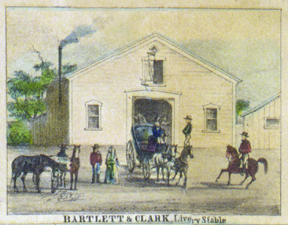
© Bancroft Library.
Bartlette & Clark's Livery Stable 1855
1856 The Opposition Line of Stages ran an ad in the Weekly Columbia.
1856 Clark & Bartlette sell Livery. It was called the Broadway Livery Stable.
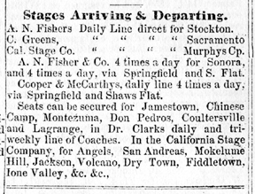
1856 newspaper ad
1856 Parker & Stone run an ad in the Weekly Columbian newpaper.
1857 Wells, Fargo & Co. Express have been doing business in Columbia. (See Wells, Fargo page.)
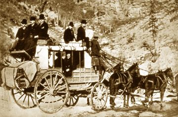
Typical stagecoach (Abbott & Downing Passenger "mud" wagon) of the era.
1860 Starbird and David S. Turner had located a new shop at Waldo and Main Streets. (Eastman - May 1964)
1861 July 27 - Another fire occured. Starbird still occupied the premises at the time of the fire, he sold the vacant lot to Herman Wolf. (Eastman - May 1964)
1865 The Old Line of Stages ran an ad in the last Columbia newspaper,called the Tuolumne Courier.
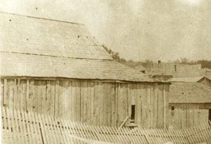
The back portion of the Broadway Livery Stable c1866.
1867 May - Pete Kelly marries Ann Kelley. (Eastman - May 1964)
1870 February 12 - Michael Kelly buys the lot at the south east corner of Fulton and Broadway for $500, from T.M & W.N.(?) Byrne. (Eastman 1:17:53)
1870 July 8 - Columbia census shows Michael Kelly age 35, property valued at $3400, born in Massachusetts and a stable keeper. His wife is Bridget age 28 keeping house and born in Ireland. They have three children: Michael age 6, M.A. (female) age 2, J.A. (male) age 5/12. In the same census next is Patrick Kelly age 21(25 August 1849) listed as a stage driver born in Ireland. Next dwelling is Peter Kelly age 26 a miner from ireland, with his wife Ann age 36 and 2 year old daughter M.J.(?) "Pete & Pat worked for Michael in the livery business. Mrs. John Duffy their only sister, was (most likely born) between Michael and Peter." (Eastman 1:17:61) Census for the same year shows Patrick's wife Ann is ten years older than him and they have a 2 year old female M.E. Kelly.
1871 August - M. (Mike) Kelly owns Block 17, Lot 239. - Deputy County Surveyor map by John P. Dart
1873 Pete Kelly advertizes that he has bought out the Copperopolis Stage Line and he signs his name as Kelley, like his wife. He keeps that spelling to the end of his life. (Eastman - May 1964)
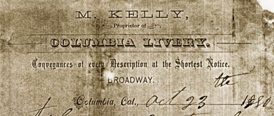
M. Kelly, proprietor of Columbia Livery. On Broadway. 1870s.
1880 June 15 - Census of Township 2, Tuolumne Co. shows Prentiss Trask age 50 as a farmer, married to Susan M. age 37 and children: Clara age 15, George M. teamster age 20 and John R Trask, brother to Prentiss.
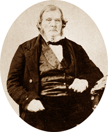
Michael Kelly, owner of Columbia Livery Stable c1870.
1888 October 17 - George Mellen Trask buys from Michael Kelly the Stage Stable on the southeast corner of Fulton & Broadway Streets. "several lots and the stable and horses on the s.e. corner of Fulton & Broadway." (Eastman 1:17:53)
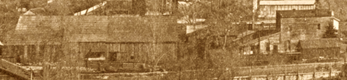
The Trask Livery Stable on the left and Wells Fargo on the right 1890
1898 George Mellen Trask operates the Broadway Stable. The Columbia & Sonora Stage Line operates from this Livery.
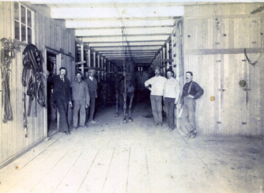
Inside the Livery of the Broadway Stable - c1890s
History notes on the back of above image indicate: "George Sidney Dawley is 3rd from right. He was father to Georgie Lois Dawley(Smith) and grandfather to John Dawley Smith (Jack Smith). The man in the suit at far left is probably George M. Trask, whose father Prentiss M. Trask bought stable from Mike Kelly in 1888. G.S. Dawley married Mary Ann (Mame) Kelly in 1902. Mame Kelly was M. Kelly's daughter" - Jack Smith.
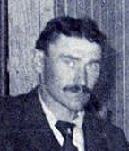
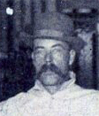
George Mellen Trask & George Sidney Dawley
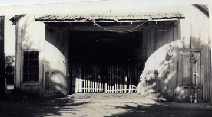
Front door Columbia/Broadway Stables building being used as a filling station for Mobile Gasoline - c1930
STAGE LINES
In search for more 20th century data
1900 June 7 - George M. Trask Born in California 1859 married Margaret in 1883. He is listed as a Liveryman.
1920 February - George M. Trask is listed as a stagedriver delivering the U.S. Mail on the census of Township 2, Tuolumne Co. Born in Maine c1860. Married to Margaret age 56 born in California of German parents (Stockel).
1930 April 14 - George M. Trask is listed as a Mail carrier on the census of Township 2, Tuolumne Co. Wife Margaret age 66.
1930 May 30 - George Mellen Trask Died and was buried in the IOOF cemetery. Location not known.
1954 The brick building between the Wells, Fargo & Co. Express and the Bank is restored. It becomes the stage depot for town.
1960 April - Zane Orr owns the concession and runs the coach from the City Hotel.
1962 Zane uses the lot (Colombo Saloon) for his stage concession. Later the same year moving it to the current location.
1966-1973 Frank Coleman drove Stage in Columbia. (Frank was part Mi Wuk and was born
in Coulterville, April 15, 1894. He first drove stage when he was 15 in Yosemite. Here is a newspaper clipping with him driving a "six-up" in Columbia.)
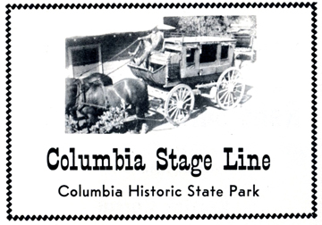
An ad in a 1970 "Old Timer Days" Mother Lode Fair Program.
1969 31 May - Louis R. "Louie" Gookin gets a 5 year special use permit to operate a stagecoach in Columbia. (Park & Concessionaire report 1969-70)
1975 31 May - Louis R. "Louie" Gookin gets a 5 year contract to operate a stagecoach in Columbia. (Park & Concessionaire report 1975-76)
1969-1983 Louie & Chris Gookin drove stage in Columbia.
1973 Stagecoach Depot was located on the south/west corner of Main & State Streets. (per "Columbia Memories" by W. Lee Roddy)
1983 July 1 - Davene Stoller buys the stagecoach concession.
1999 June 20 - Davene Stoller looses bid on concession.
1999 June - Frank and Marshall Long are the stagecoach concessionaires. Known as the A. N. Fisher Stagecoach.
2006 August - Frank and Marshall Long sell out to Tom Fraser.
2006 Tom Fraser is the stagecoach concessionaire. Known as Quartz Mountain Stage Line & Saddle Horses.
2012 March - State reconfigures the inside of the stagecoach concession to be more interpretive and ADA compliant.
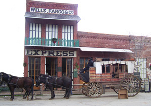
© Jasper Hamilton.
Contact Information:
Quartz Mountain Stage Line & Saddle Horses
209 588-0808

Great source materials:
Stagecoach Heyday by William H. Boyd.
Via Western Express & Stagecoach by Oscar O. Winther.
This page is created for the benefit of the public by
Floyd D. P. Øydegaard
Email contact:
fdpoyde3 (at) Yahoo (dot) com
A WORK IN PROGRESS,
created for the visitors to the Columbia State Historic park.
© Columbia State Historic Park & Floyd D. P. Øydegaard.
{kind=link}
{kind=link}
{kind=link}
{kind=link}
{kind=link}
{kind=link}